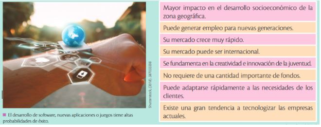

El emprendimiento involucra acción, por lo que el presente módulo se focaliza en la ejecución de actividades prácticas y vivenciales, de tal manera que se cumpla con uno los
grandes objetivos de esta asignatura, el cual es motivar al estudiante a la realización de tareas que incentiven el emprendimiento. En este marco cobra particular relevancia la
aplicación de metodologías prácticas y reales que le permiten al estudiante asimilar los principios de Emprendimiento y Gestión desde su propia realidad y mediante vivencias y
prácticas al realizar entrevistas a emprendedores del sector, visitar empresas, participar en ferias, concursos y eventos, etc. Estos son solamente algunos ejemplos que
viabilizan la práctica en situaciones reales, y posibilitan analizar y contrastar diversas dinámicas para aprender a enfrentar problemas y persistir hasta su resolución. Cualquier
emprendimiento que tenga un componente tecnológico puede tener altas probabilidades de éxito. La creación de un emprendimiento de base tecnológica tiene algunos beneficios:

Los emprendimientos tecnológicos han tenido gran acogida en los últimos años, especialmente en mercados juveniles. A continuación, algunos ejemplos de emprendimientos
con base tecnológica que operan actualmente en el Ecuador.
Airbnb:
Es una empresa creada en Estados Unidos que se
fundamenta en un software por el cual se ofertan aloja-
mientos en casas particulares para personas que viajan a
otros lugares y que no desean hospedarse en los hoteles
tradicionales. Se ofrece el servicio por Internet y la empresa
gana una comisión por el hospedaje de los turistas o visi-
tantes. A su vez, el visitante se ahorra dinero porque paga
menos que un hotel.
Uber:
Es un sistema muy parecido al anterior, que se fun-
damenta en un software por el cual se ofertan servicios de
transporte particulares para personas que requieren movi-
lizarse. Se ofrece el servicio por Internet y la empresa gana
una comisión por el transporte de los usuarios. A su vez, el
usuario puede movilizarse con gran seguridad. Si bien aún
no es autorizada en el Ecuador, en otros países esta aplicación tiene gran éxito comercial Corporación.
KRUGER:
Es una empresa consultora ecuatoriana que se ha constituido en el primer laboratorio privado de emprendimiento tecnológico del Ecuador como una inversión
de responsabilidad social empresarial y una apuesta por la economía del conocimiento. Sus oficinas situadas en Quito están inspiradas en los mayores
ecosistemas de innovación tecnológica del mundo como Google, Facebook o Twitter. El interior del laboratorio esta conceptualizado y diseñado con un
ambiente open y lúdico para que las ideas fluyan, la creatividad se expanda y para que los potenciales negocios se atrapen, se potencien y se conviertan
en startups (empresas) exitosas y rentables.
Para Ernesto Kruger, Presidente de la Corporación: “Ecuador tiene un potencial enorme para el emprendimiento.
Por tanto, se busca fomentar la economía del conocimiento a través de la creación de prototipos para emprendimientos tecnológicos con valor agregado y alto
componente nacional para así gestar startups escalables y competitivas e integrarse al cambio de la matriz productiva” (www.krugercorporation.com). Al momento,
corporación Kruger tiene oficinas en varios países del mundo. Con estos tres ejemplos se puede evidenciar que algunas ideas simples que utilizaron tecnologías
pueden ser emprendimientos de gran trayectoria local o internacional. Esta es una gran oportunidad para los jóvenes emprendedores ecuatorianos, quienes podrían
utilizar sus conocimientos tecnológicos para explotar su creatividad e innovación.